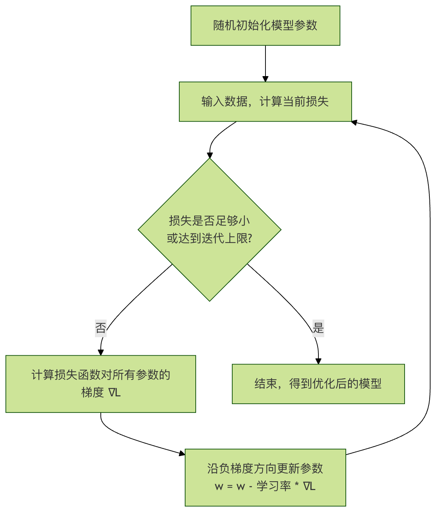

損失関数と勾配
この章では、きわめて重要な2つの中核的概念を一緒に探っていきます。損失関数と勾配それらは機械学習アルゴリズムが学習と改善の基盤です。
想像してみてください。あなたがバスケットシュートを練習しているとします。毎回投げた後、ボールが入ったか、左にそれたか、右にそれたかを観察します。この観察結果と完璧なゴールとの差が、あなたの損失そして次にもっと正確に投げるために、あなたは今回のずれの方向と大きさに基づいて姿勢や力を調整します。この調整の方向と大きさは、勾配。
機械学習では、モデルとはその学習者であり、損失関数はその誤り度合いを測定し、勾配はそれにどのように改善すべきかを伝えます。これらを理解すれば、機械学習がどのように機能するのかという中核的なロジックを掴んだことになります。
一、損失関数：モデルの成績表
1.1 損失関数とは？
損失関数は、時にはコスト関数或目的関数とも呼ばれ、これはモデルの予測値と実際の値との間の差異を定量化する関数です。
- 核心的な役割：それはモデルの予測パフォーマンスに具体的な「スコア」を付けます。このスコアが低いほど、モデルの予測が正確であることを示し、スコアが高いほど、予測誤差が大きいことを示します。
- 比喩による理解：試験と同じように、損失関数の「スコア」はモデルの試験結果です。私たちの究極の目標は、「学習」（モデルのパラメータを調整すること）を通じて、このスコア（損失）をどんどん低くすることです。
1.2 よくある損失関数の例
異なるタスクには異なる評価基準が必要です。以下は最も基本的な2つの損失関数です。
平均二乗誤差- 回帰問題に適しています（連続値を予測、例：住宅価格、気温）
平均二乗誤差は、すべてのサンプルの予測値と真の値の差の二乗の平均を計算します。。
公式： MSE = (1/n) * Σ(真实值ᵢ - 预测值ᵢ)²
n：サンプル数Σ：総和記号実測値ᵢ：i 番目のサンプルの真の値予測値ᵢ：モデルによる i 番目のサンプルの予測値
特徴：二乗を使用するため、大きな誤差に対してより重いペナルティを与えます（誤差が2の場合、二乗すると寄与は4。誤差が10の場合、二乗すると寄与は100にもなります）。
コード例：
例
# 5つのサンプルの真の値と予測値があると仮定します
y_true = np.array([3, -0.5, 2, 7, 4]) # 真の値
y_pred = np.array([2.5, 0.0, 2, 8, 5]) # 予測値
# 手動でMSEを計算
n = len(y_true)
squared_errors = (y_true - y_pred) ** 2 # 各サンプルの二乗誤差を計算
mse_manual = np.sum(squared_errors) / n # 合計して平均を取る
print(f"手動計算のMSE: {mse_manual}")
# sklearnライブラリの関数を使用して検証
from sklearn.metrics import mean_squared_error
mse_sklearn = mean_squared_error(y_true, y_pred)
print(f"Sklearnで計算したMSE: {mse_sklearn}")
交差エントロピー損失- 分類問題に適しています（カテゴリを予測、例：画像が猫か犬か）
交差エントロピーが測るのは、モデルが予測する確率分布とと真の確率分布の間の差異です。二値分類では、真の分布は通常[1, 0]（カテゴリA）または[0, 1]（カテゴリB）です。
二値分類の公式（対数損失）：
Log Loss = - (1/n) * Σ [真实值ᵢ * log(预测概率ᵢ) + (1 - 真实值ᵢ) * log(1 - 预测概率ᵢ)]
直感的な理解：真のラベルが1の場合、モデルが予測する確率も1に近いことを望みます。もしモデルが非常に低い確率（たとえば0.1）を予測した場合、log(0.1)は非常に大きな負の数になり、前の負号を掛けることで損失値が非常に大きくなり、ペナルティが重いことを示します。
コード例：
例
from sklearn.metrics import log_loss
# 二値分類の例：真のラベル（1は「はい」、0は「いいえ」）
y_true_binary = np.array([1, 0, 0, 1]) # 真のカテゴリ：はい、いいえ、いいえ、はい
# モデルが「はい」と予測する確率
y_pred_prob = np.array([0.9, 0.1, 0.2, 0.8]) # 予測確率：0.9, 0.1, 0.2, 0.8
# sklearnを使用して交差エントロピー損失（対数損失）を計算
ce_loss = log_loss(y_true_binary, y_pred_prob)
print(f"交差エントロピー損失 (Log Loss): {ce_loss}")
二、勾配：最適化の方向を指し示す「コンパス」
これでモデルにどのようにスコアを付けるか（損失関数）が分かりました。次に最も重要な問題は：モデルはどのようにこのスコアに基づいて自分を改善するのか？その答えは、勾配。
2.1 勾配とは？
機械学習では、モデルは通常、多くのパラメータ（または重み）から構成されます。ここで損失関数 Lを、これらすべてのパラメータの関数とみなすことができます：L(w1, w2, ..., wn)。
- 勾配とは、損失関数の各パラメータのに関する偏微分から構成されるベクトルです。
- 数学的な表現：
∇L = [∂L/∂w1, ∂L/∂w2, ..., ∂L/∂wn] - 核心的な意味：
- 方向：勾配ベクトルが指す方向は、損失関数がその点で最も速く上昇する方向です。
- 大きさ：各偏微分の絶対値の大きさは、損失関数がそのパラメータの変化に対してどれほど敏感であるかを示します。。
2.2 なぜ勾配が最適化を導けるのか？
私たちの目標は損失関数を最小化することです。勾配が損失の最も速く上昇する方向を指しているなら、その反対方向は-∇L自然と損失が最も速く下降する方向になります。
最適化のプロセス（勾配降下法）は、次のようにイメージできます。：
あなたは谷（損失曲面）の斜面に立っていて、目隠しをして谷底（損失最小点）にたどり着きたいとします。一歩ごとに、足で周囲のどの方向が最も急勾配かを感じ取り（勾配を計算し）、最も急な下り坂の方向（負の勾配方向）へ一歩を踏み出します（パラメータを更新）。このプロセスを繰り返すことで、最終的に谷底に到達できます。
このプロセスは、以下のフローチャートでまとめられます：

2.3 勾配降下法の簡単な例
最も簡単な例を使いましょう。パラメータが1つだけのw線形モデルで勾配降下法を説明します。
損失関数がL(w) = w²であるとします。明らかに、w = 0のとき、損失は最小になります。
- 勾配の計算：
∇L = dL/dw = 2w - パラメータ更新の公式：
w_new = w_old - η * (2 * w_old)ηである学習率は、各ステップの大きさを制御します。
例
import matplotlib.pyplot as plt
# 損失関数 L(w) = w^2 を定義
def loss(w):
return w ** 2
# 勾配 dL/dw = 2*w を定義
def gradient(w):
return 2 * w
# 勾配降下法のアルゴリズム
def gradient_descent(start_w, learning_rate, iterations):
w = start_w
w_history = [w] # w の変化の履歴を記録
loss_history = [loss(w)] # 損失の変化の履歴を記録
for i in range(iterations):
grad = gradient(w) # 現在の点の勾配を計算
w = w - learning_rate * grad # 負の勾配方向にパラメータを更新
w_history.append(w)
loss_history.append(loss(w))
return w_history, loss_history
# 勾配降下法を実行：w=5 から開始、学習率 0.1、20回反復
w_start = 5.0
lr = 0.1
iters = 20
w_hist, loss_hist = gradient_descent(w_start, lr, iters)
print(f"初期 w: {w_hist)
print(f"最終 w: {w_hist[-1]:.4f}, 最終損失: {loss_hist[-1]:.4f}")
# 最適化プロセスを可視化
plt.figure(figsize=(12, 4))
# 図1：損失関数の曲線と最適化の経路
plt.subplot(1, 2, 1)
w_vals = np.linspace(-6, 6, 100)
plt.plot(w_vals, loss(w_vals), label='L(w) = w²')
plt.scatter(w_hist, loss_hist, c='red', s=20, label='Gradient Descent Steps')
plt.plot(w_hist, loss_hist, 'r--', alpha=0.5)
plt.xlabel('Parameter w')
plt.ylabel('Loss L(w)')
plt.title('Gradient Descent on L(w)=w²')
plt.legend()
plt.grid(True)
# 図2：反復回数に伴う損失値の減少曲線
plt.subplot(1, 2, 2)
plt.plot(range(len(loss_hist)), loss_hist, 'b-o')
plt.xlabel('Iteration')
plt.ylabel('Loss')
plt.title('Loss Reduction Over Iterations')
plt.grid(True)
plt.tight_layout()
plt.show()
このコードを実行すると、次のことがわかります。：
- 左の図は、パラメータ
wが5.0から始まり、放物線を一段一段「転がり落ちて」最終的に最小値点0に近づく様子を示しています。 - 右の図は、反復回数が増えるにつれて損失値が急速に減少する様子を示しています。
三、核心となる要点と関連性のまとめ
| 概念 | 比喩 | 核心的な役割 | キーポイント |
|---|---|---|---|
| 損失関数 | 成績表/誤差測定のものさし | モデルの予測の良し悪しを定量的に評価する。 | 1. 異なるタイプのタスク（回帰、分類）では異なる損失関数を使用する。 2. 損失値が小さいほど、モデルの性能は良い。 |
| 勾配 | コンパス/最も急な下り坂の方向 | 損失を最も速く減らすために、各モデルパラメータをどのように調整すべきかを示す。 | 1. 損失関数の全パラメータに対する偏微分ベクトルである。 2. 負の勾配方向損失が最も速く減少する方向である。 |
| 勾配降下法 | 目隠し下山法 | 勾配情報を利用して、パラメータを反復的に更新し損失を最小化する。 | 1. 学習率重要なハイパーパラメータであり、小さすぎると学習が遅く、大きすぎると収束しない可能性がある。 2. ほとんどの機械学習モデル学習の基盤となる最適化アルゴリズムである。 |
それらの関係の連鎖は次のとおりである。： モデルが予測を行う → 損失関数が誤差を計算する → 各パラメータに対する誤差の勾配を計算する → 負の勾配方向にパラメータを更新する → モデルが改善される → 繰り返す...
その他の拡張